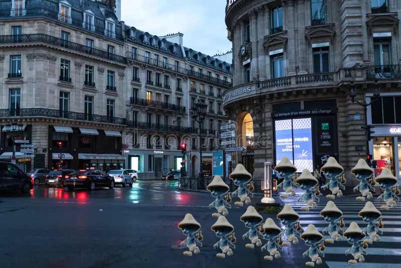

Após a repercursão dos "memes" envolvendo sua raça e cultura, os "Indo Ali" estão totalmente revoltados com o desrespeito e "objetificação" de sua raça e o quanto isso influiu em seus aspectos diários como raça independente
Este importante evento ocorrera no dia 24 de dezembro em Shibuya no Japão
Mais especificamente às 17:17 da tarde
